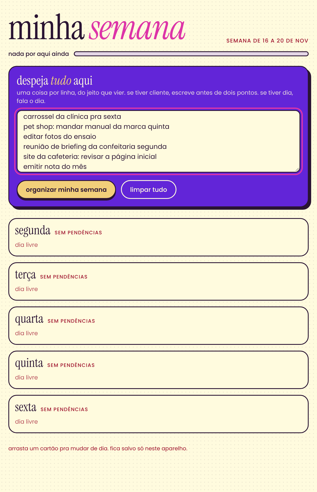

<!doctype html>
<html lang="pt-BR">
<head>
<meta charset="utf-8">
<title>EMS · terceirizei a parte chata (carrossel)</title>
<style>
@font-face{font-family:"Instrument Serif";src:url(fonts/InstrumentSerif-Regular.ttf);font-weight:400;font-style:normal}
@font-face{font-family:"Instrument Serif";src:url(fonts/InstrumentSerif-Italic.ttf);font-weight:400;font-style:italic}
@font-face{font-family:"Poppins";src:url(fonts/Poppins-Regular.ttf);font-weight:400}
@font-face{font-family:"Poppins";src:url(fonts/Poppins-Medium.ttf);font-weight:500}
@font-face{font-family:"Poppins";src:url(fonts/Poppins-SemiBold.ttf);font-weight:600}
:root{
  --ivory:#fffbde;--ivory-2:#f4edcb;--tinta:#2a1433;--ameixa:#3d1c46;--plum:#5b216c;
  --violeta:#6225d8;--violeta-2:#7b4df2;--lavanda:#c0a5c4;--lavanda-2:#e4d6e6;--wine:#9e122c;--pink:#dd34a8;--manteiga:#f2cf7a;
  --serif:"Instrument Serif",Georgia,serif;--sans:"Poppins",system-ui,sans-serif;
}
*{box-sizing:border-box}
html,body{margin:0;background:#111}
#faixa{position:relative;width:6480px;height:1350px;overflow:hidden;font-family:var(--sans)}
.l{position:absolute;top:0;width:1080px;height:1350px}
.a{position:absolute}
.tx{position:absolute;inset:0;pointer-events:none}
.serif{font-family:var(--serif);font-weight:400;letter-spacing:-.02em;line-height:.86;white-space:nowrap}
.serif em{font-style:italic}
.lead{font:600 46px/1.1 var(--sans);white-space:nowrap}
.body{font:400 32px/1.3 var(--sans)}
.cab{position:absolute;top:90px;font:500 20px/1 var(--sans);letter-spacing:.08em;text-transform:uppercase;white-space:nowrap}
.tag{position:absolute;font:500 26px/1 var(--sans);padding:.34em .7em .34em .5em;border-radius:5px;color:var(--ivory);white-space:nowrap}
.tag svg{position:absolute;left:-20px;bottom:-22px}
.janela{position:absolute;border:4px solid var(--tinta);border-radius:26px;overflow:hidden;background:var(--ivory);box-shadow:10px 10px 0 var(--tinta)}
.janela .barra{height:54px;background:var(--lavanda-2);border-bottom:4px solid var(--tinta);display:flex;align-items:center;gap:10px;padding:0 20px}
.janela .barra i{width:16px;height:16px;border-radius:50%;border:3px solid var(--tinta);background:var(--ivory)}
.janela .barra b{margin-left:14px;font:500 18px/1 var(--sans);color:var(--tinta);letter-spacing:.02em}
.janela .v{position:relative;overflow:hidden}
.janela .v img{position:absolute;display:block}
.pill{position:absolute;font:500 30px/1.25 var(--sans);padding:.55em 1em;border-radius:999px;white-space:nowrap}
.item{font:500 34px/1 var(--sans);color:var(--tinta);position:relative;display:inline-block;white-space:nowrap}
.item s{position:absolute;left:-10px;right:-10px;top:46%;height:9px;border-radius:9px;background:var(--pink);transform:rotate(-1.2deg);text-decoration:none}
.tcard{position:absolute;display:flex;align-items:center;gap:22px;background:var(--lavanda-2);border:5px solid var(--tinta);border-radius:30px;padding:26px 30px;box-shadow:9px 9px 0 var(--tinta);white-space:nowrap}
.tcard .cb{width:52px;height:52px;border:5px solid var(--tinta);border-radius:15px;background:var(--ivory);flex:none}
.tcard .t{font:500 38px/1.15 var(--sans);color:var(--tinta)}
.tcard .t small{display:block;font:400 24px/1.2 var(--sans);color:var(--wine);margin-top:4px}
.tcard .tp{font:600 22px/1 var(--sans);letter-spacing:.06em;text-transform:uppercase;padding:11px 16px;border-radius:999px;color:var(--ivory);background:var(--violeta)}
#relevo,#grao{position:absolute;inset:0;width:6480px;height:1350px;pointer-events:none}
#relevo{mix-blend-mode:soft-light;opacity:.42}
#grao{mix-blend-mode:overlay;opacity:.26}
</style>
</head>
<body>
<div id="faixa"></div>
<script>
const K={ivory:'#fffbde',ivory2:'#f4edcb',tinta:'#2a1433',ameixa:'#3d1c46',plum:'#5b216c',violeta:'#6225d8',violeta2:'#7b4df2',lavanda:'#c0a5c4',lavanda2:'#e4d6e6',wine:'#9e122c',pink:'#dd34a8',manteiga:'#f2cf7a'};
const W=1080;
const A=(x,y,html,style='',cls='')=>`<div class="a ${cls}" style="left:${x}px;top:${y}px;${style}">${html}</div>`;
const cursor=(w=30,fill=K.tinta,stroke=K.ivory)=>`<svg width="${w}" height="${w}" viewBox="0 0 24 24"><path d="M3 2 L21 10 L12.5 12.5 L9 21 Z" fill="${fill}" stroke="${stroke}" stroke-width="1.6" stroke-linejoin="round"/></svg>`;
const handle=(x,y,bg=K.pink)=>`<span class="tag" style="left:${x}px;top:${y}px;background:${bg}">@itsemsdesign${cursor()}</span>`;
const cab=(n,cor)=>`<span class="cab" style="left:90px;color:${cor}">a parte chata</span><span class="cab" style="right:90px;color:${cor}">0${n} / 06</span>`;

// estrela em retícula do sistema (HalftoneStar)
const _st={};
function halftone(color,size=900){
  const key=color+size;if(_st[key])return _st[key];
  const c=document.createElement('canvas');c.width=c.height=size;const g=c.getContext('2d');
  const cx=size/2,cy=size/2,R=size*.49,r=R*.45;const pts=[];
  for(let i=0;i<10;i++){const a=-Math.PI/2+i*Math.PI/5;const rr=i%2?r:R;pts.push([cx+rr*Math.cos(a),cy+rr*Math.sin(a)]);}
  const path=new Path2D();pts.forEach((p,i)=>i?path.lineTo(...p):path.moveTo(...p));path.closePath();
  g.fillStyle=color;const step=size/60;
  for(let y=step/2;y<size;y+=step)for(let x=step/2;x<size;x+=step){
    if(!g.isPointInPath(path,x,y))continue;
    const d=Math.hypot(x-cx,y-cy)/R;const rad=step*.48*(1-d*.82);
    if(rad>.6){g.beginPath();g.arc(x,y,rad,0,7);g.fill();}}
  return _st[key]=c.toDataURL();
}
const star=(x,y,size,color,rot,op)=>A(x,y,``,`opacity:${op};transform:rotate(${rot}deg)`);

// matéria de cada lâmina
const TX={
  reticula:c=>`background-image:radial-gradient(${c} 1.6px,transparent 2px);background-size:14px 14px`,
  linho:c=>`background-image:repeating-linear-gradient(0deg,${c} 0 1px,transparent 1px 5px),repeating-linear-gradient(90deg,${c} 0 1px,transparent 1px 5px)`,
  grade:c=>`background-image:linear-gradient(${c} 2px,transparent 2px),linear-gradient(90deg,${c} 2px,transparent 2px);background-size:54px 54px;background-position:-2px -2px`,
  fibras:c=>`background-image:repeating-linear-gradient(97deg,${c} 0 2px,transparent 2px 11px),repeating-linear-gradient(-6deg,${c} 0 1px,transparent 1px 17px)`,
};
const janela=(x,y,w,h,img,ix,iy,iw,rot,titulo='minha semana')=>`<div class="janela" style="left:${x}px;top:${y}px;width:${w}px;transform:rotate(${rot}deg)">
  <div class="barra"><i></i><i></i><i></i><b>${titulo}</b></div>
  <div class="v" style="height:${h}px"></div></div>`;

const L=[];
/* 01 · capa: a lista da parte chata, já riscada. sem dizer quem riscou. */
L[0]={bg:K.violeta,tx:TX.reticula('rgba(123,77,242,.75)'),h:
  star(-300,-330,980,K.violeta2,-10,.6)+
  // cupom de pendências
  `<div class="a" style="left:540px;top:120px;width:430px;transform:rotate(4deg);filter:drop-shadow(10px 12px 0 rgba(42,20,51,.45))">
     <div style="background:${K.ivory};padding:44px 40px 70px;-webkit-mask:linear-gradient(#000 0 0) top/100% calc(100% - 22px) no-repeat,conic-gradient(from -45deg at 50% 100%,transparent 0 90deg,#000 0) bottom/44px 22px repeat-x;mask:linear-gradient(#000 0 0) top/100% calc(100% - 22px) no-repeat,conic-gradient(from 135deg at 50% 0,#000 0 90deg,transparent 0) bottom/44px 22px repeat-x">
       <div style="font:500 20px/1 var(--sans);letter-spacing:.1em;text-transform:uppercase;color:${K.wine}">pendências da semana</div>
       <div style="height:4px;background:${K.tinta};margin:18px 0 30px"></div>
       ${['lembrar o prazo','responder orçamento','organizar a semana','emitir a nota','cobrar o retorno','achar o final_v7'].map(t=>`<div style="margin-bottom:34px"><span class="item">${t}<s></s></span></div>`).join('')}
       <div style="border-top:4px dashed ${K.tinta};padding-top:20px;margin-top:6px;display:flex;justify-content:space-between;font:600 24px/1 var(--sans);color:${K.tinta}"><span>total</span><span>0 pendências</span></div>
     </div></div>`+
  A(90,812,`<span class="lead" style="color:${K.lavanda2}">confissão de designer:</span>`)+
  A(84,872,`<span class="serif" style="font-size:176px;color:${K.ivory}">terceirizei</span>`)+
  A(90,1124,`<span class="lead" style="color:${K.ivory};font-size:50px">a parte</span>`)+
  A(300,968,`<span class="serif" style="font-size:300px;color:${K.manteiga}"><em>chata.</em></span>`)+
  handle(110,1212)};

/* 02 · quem ficou com ela */
L[1]={bg:K.ivory,tx:TX.fibras('rgba(192,165,196,.38)'),h:
  cab(2,K.wine)+
  A(90,176,`<span class="lead" style="color:${K.tinta}">quem ficou com ela foi</span>`)+
  A(84,216,`<span class="serif" style="font-size:296px;color:${K.tinta}">o <em style="color:${K.pink}">claude.</em></span>`)+
  A(90,560,`<div class="body" style="color:${K.tinta};width:330px">pedi um programa<br>pra organizar<br>a minha semana.<br><b style="font-weight:600">ele fez.</b></div>`)+
  janela(450,560,560,560,'1-vazio.png',6,0,572,-3)+
  handle(110,1212,K.violeta)};

/* 03 · eu despejo */
L[2]={bg:K.ameixa,tx:TX.linho('rgba(192,165,196,.10)'),h:
  cab(3,K.lavanda)+
  A(90,190,`<span class="lead" style="color:${K.ivory}">primeiro</span>`)+
  A(326,150,`<span class="serif" style="font-size:150px;color:${K.ivory}">eu</span>`)+
  A(84,268,`<span class="serif" style="font-size:300px;color:${K.manteiga}"><em>despejo.</em></span>`)+
  `<div class="a" style="left:90px;top:610px;width:900px;height:452px;overflow:hidden;transform:rotate(-2deg);border-radius:8px">
     </div>`+
  A(90,1092,`<div class="body" style="color:${K.lavanda2};width:640px">tudo que tá na cabeça,<br>do jeito que vier.</div>`)+
  handle(110,1212)};

/* 04 · ele arruma */
L[3]={bg:K.violeta2,tx:TX.grade('rgba(255,251,222,.10)'),h:
  cab(4,K.ivory)+
  janela(130,590,820,520,'5-inteira.png',16,826,852,2)+
  A(90,190,`<span class="lead" style="color:${K.ivory}">depois</span>`)+
  A(282,150,`<span class="serif" style="font-size:150px;color:${K.ivory}">ele</span>`)+
  A(84,262,`<span class="serif" style="font-size:290px;color:${K.manteiga}"><em>arruma.</em></span>`)+
  A(520,178,`<div class="body" style="color:${K.ivory};font-size:30px;white-space:nowrap">vira semana: dia, cliente<br>e tipo de tarefa.</div>`)+
  handle(760,1212)};

/* 05 · virada */
L[4]={bg:K.lavanda,tx:TX.fibras('rgba(42,20,51,.07)'),h:
  cab(5,K.tinta)+
  star(520,-360,900,K.ivory,14,.5)+
  A(84,296,`<span class="serif" style="font-size:150px;color:${K.tinta}">agenda</span>`)+
  A(520,366,`<span class="lead" style="color:${K.tinta};font-size:50px">é com ele.</span>`)+
  A(90,506,`<span class="lead" style="color:${K.tinta};font-size:50px">gosto é</span>`)+
  A(84,526,`<span class="serif" style="font-size:338px;color:${K.violeta}"><em>comigo.</em></span>`)+
  `<span class="pill" style="left:90px;top:950px;background:${K.tinta};color:${K.ivory};border-radius:34px">a ia cuida do que me cansa.<br>o que me diverte eu não divido.</span>`+
  handle(110,1212,K.violeta)};

/* 06 · chamada: a pendência é de quem lê */
L[5]={bg:K.violeta,tx:TX.reticula('rgba(123,77,242,.75)'),h:
  cab(6,K.lavanda2)+
  A(90,186,`<span class="lead" style="color:${K.lavanda2}">e a sua parte</span>`)+
  A(84,226,`<span class="serif" style="font-size:300px;color:${K.ivory}">chata,</span>`)+
  A(84,486,`<span class="serif" style="font-size:210px;color:${K.ivory}">qual <em style="color:${K.manteiga}">é?</em></span>`)+
  `<div class="a" style="left:90px;top:790px;width:900px;background:${K.ivory};border:5px solid ${K.tinta};border-radius:40px;padding:34px 40px 46px;transform:rotate(-2deg);box-shadow:12px 12px 0 ${K.tinta}">
     <div style="display:flex;align-items:baseline;gap:20px;margin-bottom:28px"><span class="serif" style="font-size:76px;color:${K.tinta};line-height:1">hoje</span><span style="font:500 22px/1 var(--sans);letter-spacing:.08em;text-transform:uppercase;color:${K.wine}">1 pendência sua</span></div>
     <div class="tcard" style="position:relative;display:inline-flex"><span class="cb"></span><span class="t">comentar <b style="font-weight:600">ROTINA</b><small>que eu te mando o programa</small></span><span class="tp" style="background:${K.pink}">você</span></div>
   </div>`+
  handle(110,1212)};

const faixa=document.getElementById('faixa');
faixa.innerHTML=L.map((l,i)=>`<section class="l" style="left:${i*W}px;background:${l.bg}"><div class="tx" style="${l.tx}"></div>${l.h}</section>`).join('')+
  // o que atravessa cada corte
  A(W*2-250,720,cursor(520,'none',K.lavanda),'opacity:.3;transform:rotate(-8deg)')+                         // 2|3 cursor gigante
  `<div class="tcard" style="left:${W*3-290}px;top:1090px;transform:rotate(-5deg)"><span class="cb"></span><span class="t">aprovar paleta<small>pet shop</small></span><span class="tp">identidade</span></div>`+ // 3|4 cartão indo pra semana
  A(W*4-330,820,``,'opacity:.28;transform:rotate(-12deg)')+ // 4|5
  A(W*5-210,560,`<span class="serif" style="font-size:900px;line-height:.8;color:transparent;-webkit-text-stroke:5px ${K.ivory}">?</span>`,'opacity:.3;transform:rotate(8deg)')+ // 5|6
  A(W-330,60,``,'opacity:.3;transform:rotate(10deg)')+ // 1|2
  `<svg id="relevo"><filter id="papel" x="0" y="0" width="100%" height="100%"><feTurbulence type="fractalNoise" baseFrequency=".011 .016" numOctaves="4" seed="7"/><feDiffuseLighting lighting-color="#fff" surfaceScale="2.4" diffuseConstant="1"><feDistantLight azimuth="40" elevation="62"/></feDiffuseLighting></filter><rect width="100%" height="100%" filter="url(#papel)"/></svg>`+
  `<svg id="grao"><filter id="g" x="0" y="0" width="100%" height="100%"><feTurbulence type="fractalNoise" baseFrequency=".9" numOctaves="2" seed="3"/><feColorMatrix type="saturate" values="0"/></filter><rect width="100%" height="100%" filter="url(#g)"/></svg>`;

Promise.all([document.fonts.load('400 100px "Instrument Serif"'),document.fonts.load('italic 400 100px "Instrument Serif"'),document.fonts.load('400 40px Poppins'),document.fonts.load('500 40px Poppins'),document.fonts.load('600 40px Poppins'),
  ...[...document.images].map(i=>i.decode().catch(()=>{}))]).then(()=>{window.READY=true});
</script>
</body>
</html>
